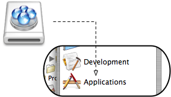
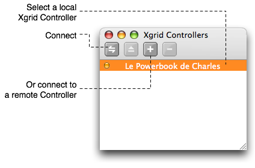
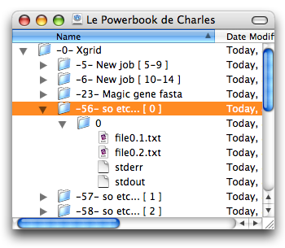
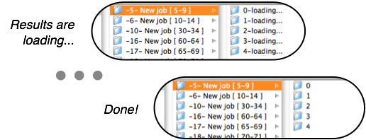

System Requirements:
Xgrid Fuse 0.2.0 is a universal binary, and will run natively on both Intel and PowerPC processors.
Created by Charles Parnot.
Copyright Charles Parnot 2007. All rights reserved.
Contact by email (fill the blanks):
charles parnot gmail com
Read more on the web
Before using Xgrid FUSE, you must install MacFuse. This will install a kernel extension and will require a restart of your machine. The installation itself is very simple and straightforward, but you must be aware that MacFuse works at a low level in the OS X system, and any bug in there can have strong consequences on the stability of your system. MacFuse has been remarkably stable for me and for others, but it is still at an early stage and should be considered experimental. Do not use on production systems (whatever that means), and use at your own risks. Read more on the MacFuse web site.
Still motivated? Download the latest version from the MacFuse web site, double-click the installation package and follow the instructions.
Copy the Xgrid FUSE application icon into your Applications folder.

Double-click on the Xgrid FUSE application icon. A window with a list of local Xgrid controllers should open. To connect to a controller, select it in the list, and click the Connect button (double-arrow icon), or press return. You can also connect to a remote controller by clicking the '+' button and type its address in the sheet that opens. You may be asked for the password to your Xgrid controller.

A new volume should appear on the Desktop (for command-line users, check the /Volumes directory). Inside this volume, you can browse the controller hierarchy, from the grids (usually only one), down to jobs, tasks, and result files. Note that result files will only upload after you select a job. It may take a while to download all the files if your results are large files, or if your connection to the controller is slow.

Grids and jobs will appear as folder with a name composed of their identifier followed by their actual name (e.g. '-10- My Grid' or '-19289- fasta job'). Tasks will appear as folders, named after their task index. While the results are still loading, the task name will have include the word "loading..." after the task index.

To quit Xgrid FUSE, eject the disk corresponding to the Xgrid controller. A lost connection should have the same effect (with the possibility of an annoying spinning beach ball first).
Great big thanks to all these terrific people!
version 0.2.0 (May 2007)
version 0.1.0 (April 2007)